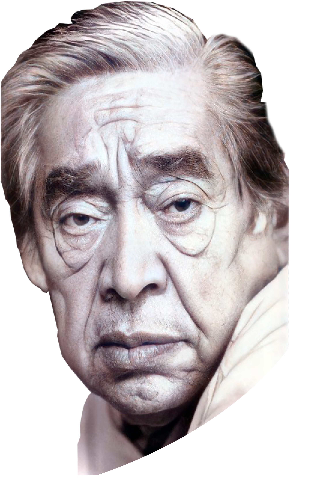

Aldemir
Martins

1922
O artista plástico Aldemir Martins nasceu em Ingazeiras, no Vale do Cariri, Ceará em 8 de novembro de 1922.
1940
O talento do artista se mostrou desde os tempos de colégio, em que foi escolhido
como orientador artístico da classe. Aldemir Martins serviu ao exército de 1941
a 1945, sempre desenvolvendo sua obra nas horas livres. Onde desenha o mapa
aerofotogramétrico de Fortaleza.
Durante o serviço militar, conquistou seu primeiro
prêmio ao vencer o concurso promovido pela Oficina de Material Bélico da 10ª Região
Militar na pintura de viaturas do exército. Chegou até mesmo à curiosa patente de
Cabo Pintor.
Nesse tempo, frequentou e estimulou o meio artístico no Ceará, chegando
a participar da criação do Grupo ARTYS e da SCAP – Sociedade Cearense de Artistas Plásticos,
junto com outros pintores, como Mário Barata, Antonio Bandeira e João Siqueira.
1956
Em 1956, sua carreira atinge o ápice ao ser premiado como melhor desenhista internacional na 28ª Bienal de Veneza e expor em diversas partes do mundo.
1957
Recebe o 7º lugar na enquete popular feita pelo jornal Última Hora, de São Paulo, para O Homem do Ano, de 1956. Por sua participação no VI Salão Nacional de Arte Moderna, no Rio de Janeiro, recebeu o Prêmio Viagem ao País. Recebe o Prêmio Melhor Desenhista Brasileiro na IV Bienal de São Paulo, dado pelo Museu de Arte Moderna do Rio de Janeiro. Seu desenho Pássaro é escolhido para cartão de natal da revista belga Quadrum.
1960
Participa da criação de diversos produtos artísticos aplicados, como a abertura da telenovela Gabriela, cenário do primeiro festival de MPB da Record e o cenário da peça Lampião de Rachel de Queiroz